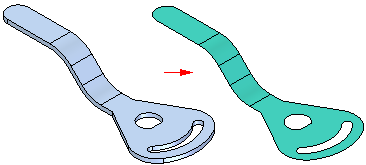
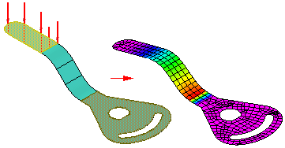
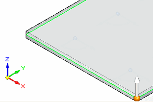
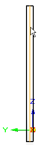
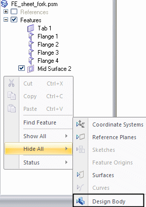

Selecting surface geometry for studies
You can select surface geometry directly in the graphics window.
When working with sheet metal models (.psm), you must select an existing mid-surface feature. If a mid-surface feature does not exist, you can use the Mid-Surface command on the Simulation tab to create a mid-surface for analysis, and then you can use the Define command to include the mid-surface in the study.

You can then analyze the mid-surface feature.

Why you should use a mid-surface for analysis of sheet metal models
Sheet metal models which contain solids that are thin in relation to overall size are good candidates for using a mid-surface for analysis purposes. Examples include thin-walled parts, sheet metal parts, or plastic injection molded parts.
You can produce a much smaller and much more accurate analysis model by meshing mid-surfaces formed from a thin-wall part, than by solid meshing the thin-wall. Differences in model sizes can literally be an order of magnitude, thereby significantly reducing processing time. In most cases, you even get the added benefit of a more accurate solution.
Creating a mid-surface
To create a mid-surface, you can use the Simulation tab→Geometry group→Mid-Surface command .
The Mid-Surface command constructs a surface between the sheet faces of a sheet metal part. You use the Mid-Surface command bar to define the location of a mid-surface by specifying the side of the part you want to offset and a ratio value between 0 and 1.0.

By default, a mid-surface updates when the model geometry is changed. You can remove this associativity permanently by selecting the mid-surface in PathFinder, and then selecting the Break command on its shortcut menu.
After you create the mid-surface, you must then select it and apply it to the study using the Define command.
Selecting a mid-surface
You can select an existing mid-surface for the active study using the Simulation tab→Geometry group→Define command.

You select the mid-surface in the graphics window or in PathFinder, and then choose Accept in the Select Mid-Surface step on the Define command bar.

To expose the mid-surface and make it easier to see and select, you can right-click in the empty space in PathFinder, and then choose the Hide All→Design Body command.

Editing a mid-surface
You can edit a mid-surface by selecting it in the graphics window, and then selecting the mid-surface edit definition handle. This displays the Mid-Surface command bar. Changing any of the options on it will update the mid-surface while maintaining the attached data, such as loads, constraints, and connectors.
Depending upon the edits you make, when the mid-surface is updated, the attached simulation data may or may not still be valid. Simulation data that needs to be adjusted or recreated is marked in the Simulation pane with this symbol: .